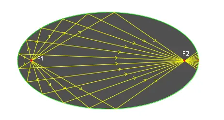
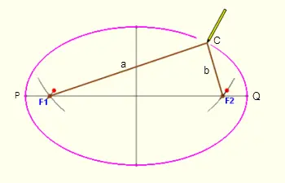

关于圆锥曲线光学性质的有趣解释 (证明与原因)
突然想起很久之前，在其他地方贴过一个关于椭圆光学性质的文章。直到今天想来，这个解释仍然是十分直观和有趣。当时我以为这样一个解释方式是「本质的」，但经同学提醒，用「直观」这个词或许会更准确。
虽然文章说的是椭圆，但是放在更一般的圆锥曲线上基本上也都适用。
椭圆的光学性质
在圆锥曲线的性质中，我们常常会见到下面这样一张图：从椭圆的一个焦点入射的光线，经过椭圆壁的反射后，会通过另一个焦点。

当然在其他一些圆锥曲线，比如抛物线或是双曲线中，也会有一些类似的性质，大抵都是从焦点发出的光线怎样怎样等。
但是为什么？
显然，可以通过数学来证明这一点，即反射处（图为 P 点）的入射光线和出射光线，与该点处的切线夹角相等。证明过程这里省略，虽然有些曲折，但是也不算是难以理解的问题。
问题在于，我通过一堆数学证明结果后，仍然对此答案感到不满意。对于我来说，这种数学证明只是相当于将问题向数学方向上退了一步，把原问题换成了数学描述而已。我仍然可以继续追问下去：为什么这么巧合，入射角和反射角经过数学计算后正好相等？
我想知道的是「为什么椭圆会有这样的特质」，而不是「证明椭圆有这样的特质」。正如王垠在原因与证明里说的那样。其实这里想表达的还是「直推因」和「目的因」的区别。
那么我不通过这么复杂的证明能否提前预知到这一点？
一个更有趣的解释 (力学性质)
纠结于这个问题以及椭圆的这些奇妙性质，高中的时候我想了好久。
突然有一天我注意到了数学课本上椭圆的画法：将绳子固定在两颗钉子上，用笔尖把绳子拉紧，绕钉子一周，则得到一个椭圆。

仔细想发现这个描述很有意思，它具有了两个隐含的事实：
第一个内容很明显，也算是椭圆的定义：椭圆上任意一点到两焦点的距离之和恒定。
第二个内容则比较隐蔽，可以从物理学角度来分析这个画椭圆的过程：在画椭圆的时候，对于任何一个切线点，笔尖两端的力是相等的，那么必然有入射角等于反射角这个性质，不然绳子不会平衡（而是会滑动）。由此可以预想到，计算的结果也会是这样。
至此，“为什么”的问题才算有了个“直观上的”解释。
其他一些有趣的推广
上面的思路可以推广到圆锥曲线中去，即便对于椭圆本身也有一些扩展，比如两颗钉子的距离调整，比如当两颗钉子重合的时候会如何？答案是显而易见的。

人存于世，因缘际会
我是兴华，很高兴见到你